CSS SELECTORS
May, 2021A CSS selector is used to select the html elements so
that style can be applied on them. There can be multiple ways to select an element. External and
internal stylesheets cannot work without selectors.
There are various kind of selectors. Given below are the most common kinds of selectors which are
frequently used.
Before proceeding, take a small quiz to test your knowledge on CSS selectors. Then compare the result with after you finish learning and see how much you've improved.
Don't worry if you're a beginner and have scored less in this one. This is just a practice, get learning and improve your knowledge on this topic.
Code for reference:
<body>
<h3 id="h3-shows">SHOWS</h3>
<ul id="shows">
<li>Brooklyn Nine Nine</li>
<li>Suits</li>
<li>The Vampire Diaries</li>
<li>Money Heist</li>
<li class="red">Sherlock</li>
</ul>
<div id="sitcoms">
<p>Brooklyn Nine Nine</p>
<div class="B99">
<p class="red">Gina Linetti is the human version of the 100 emoji.</p>
<p>I want it that way - Now number 5</p>
</div>
<p>Friends</p>
<div class="friends">
<p>Joey doesn't share food</p>
<p>I don't even have a 'pla'</p>
</div>
</div>
<p>This is a new Para</p>
<div id="links">
<a href="https://google.com" target="_blank">Click here</a>
</div>
</body>
1. The simple selectors- they select the HTML elements by their tag, ID or class.
- Selecting by tag name-
- Selecting by ID-
- Selecting by class-
- Universal selector-
- Grouping selectors-
This is used to select the elements which have the same
tag name. For eg, if you all want all h3 tags to be styled in one way, you can use this type of
selector. This is used by just specifying the tagname alone.
Understanding using an
example:
h3 {
background-color: lightpink;
}
The above code selects the h3 tag which has the content 'SHOWS' and produces the following result:
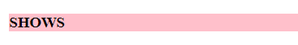
To select an element by ID, the '#' symbol followed by the ID name is
used in the stylesheet. This is used when a particular element with a unique ID has to be
styled.
Understanding using an example:
#h3-shows {
background-color: lightgreen;
}
The above code selects the h3-shows ID which has the content 'SHOWS' and produces the following result:
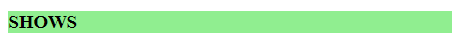
To select an element by class, the '.' symbol followed by the class
name is used in the stylesheet. This is used when all the elements with the specified class name
have to be styled.
Note : it's not necessary for the classes to have the same element tags
(Eg: h3, div, h4, etc.). The classes can be used in various elements.
Understanding using an
example:
.red {
color: red;
}
The above code selects the elements which have the class name as 'red' and produces the following result:
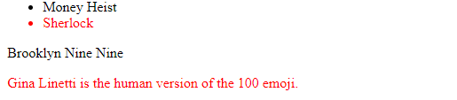
Now if you want a particular class of a particular tag to be selected, you can do that by giving
tagname, followed by '.' , followed by class name.
Understanding using an example:
li.red {
color: red;
}
The above code selects the element which has the class name as 'red' and tag name as 'li' and produces the following result:
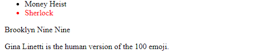
To give a particular style in all the tag names, the universal
selector which is denoted by '*' is used.
Understanding using an example:
* {
background-color: lightgrey;
}
The above code selects the entire document and produces the following result:
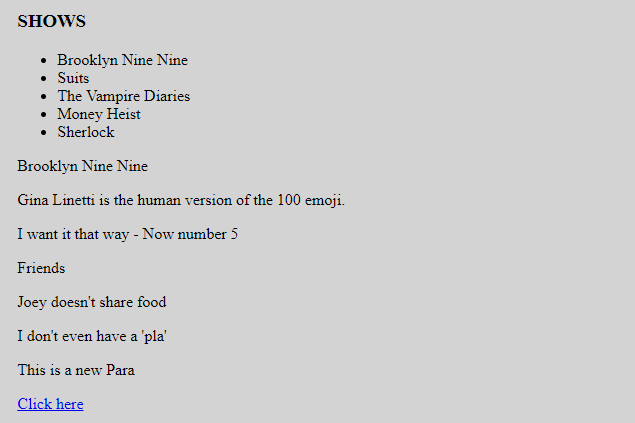
If you want to apply the same styling to various elements, you can group them using commas ','.
Understanding using an example:
.B99, .friends {
color: violet;
}
The above code selects the contents of both the divs which have the classes - 'B99' and 'friends' and produces the following result:
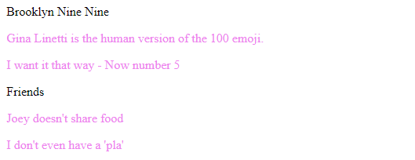
- Descendant selector-
- Direct child selector-
- Adjacent sibling selector-
This selects all elements that are children of a specified element. These elements need not
necessarily be direct children of the parent elements.
Understanding using an example:
#sitcoms p {
color: olivedrab;
}
The above code selects the contents of all the p tags which come under the sitcoms id division. Note that "This is a new para" which is outside the sitcoms id division is not selected. It produces the following result:
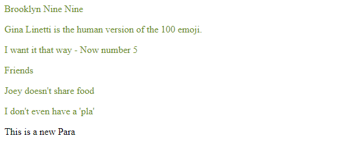
This selects all elements that are DIRECT children of a specified element. The selectors can be in
the form of tag names, class names or IDs.
Understanding using an example:
#sitcoms > p {
color: olivedrab;
}
The above code selects the contents of all only the direct p tags which come under the sitcoms id division. Note that the p tags which come under divisions 'B99' and 'friends' is not selected since they are not directly children of the parent element (division with id sitcoms). It produces the following result:
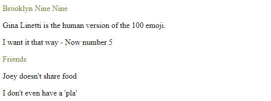
This selector selects the element which is directly after the element specified.
Understanding using an example:
.B99 + p {
background-color: yellow;
}
The above code selects the contents of the p tag which come directly after the div tag which has the class B99. Note that the p tags which come under this div tag are not selected. It produces the following result:
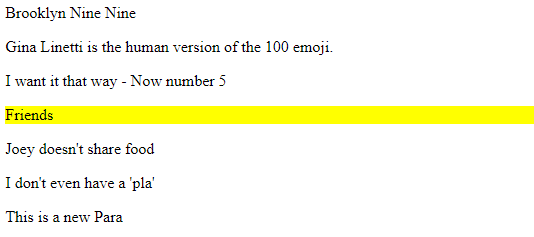
div + p {
background-color: yellow;
}
The above code selects the contents of the p tag which come directly after the divs tag. Note that the p tags which come under this div tag are not selected. It produces the following result:
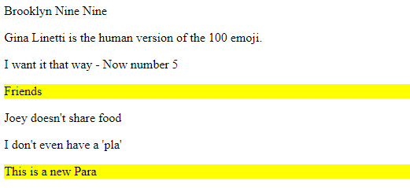
- :hover-
- :link, :visited, :active-
- :first-child, :last-child-
- :nth-child(), :nth-last-child()-
These are used in various elements. Changes the style when the user hovers the mouse on the
particular element.
Understanding using an example:
a:hover {
color: orange;
}
The above code changes the colour of the link when the mouse is hovered on top of it and produces the following result:

When the mouse is not hovering the link:
These are used by the anchor tag to differentiate between the different states.
Understanding
using an example:
a:visited {
color: red;
}
The above code changes the colour of the link when the link is visited once and produces the following result:
When the link is not visited:
They are are used to select the first child and last child element respectively.
Understanding
using an example:
p:first-child {
color: blue;
}
The above code selects the p elements which come first under the parent element. Note: 'Brooklyn Nine Nine' is selected because it's the first p tag under #sitcoms division, 'Gina Linetti is the human version of the 100 emoji.' and 'Joey doesn't share food' are selected because they are the first p tags under .B99 and .friends classes respectively.
Also, for the p tag to be selected, it has to be the first element of the respective parent. If there's another element before the first p tag, it doesn't get selected. The above code produces the following result:
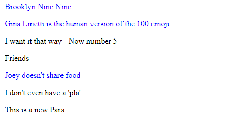
Homework- Explore :last-child. The working is similar to :first-child.
They are used to select the nth number of child element from the start and nth number of child
element from the end respectively. The number of the position should be specified in the
brackets.
Understanding using an example:
li:nth-child(3) {
background-color: teal;
}
The above code selects the third li tag and produces the following result:
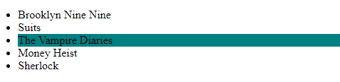
Note: To select every alternate element, you can specify 2n (even numbered elements) or 2n+1 (odd
numbered elements) accordingly.
Understanding using
an example:
li:nth-child(2n) {
background-color: teal;
}
The above code selects the second and fourth li elements and produces the following result:
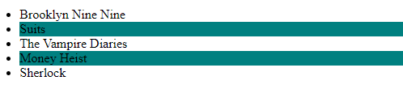
Note- these are specified by double colon (::), unlike pseudo classes which use single colon (:)
- ::first-line-
- ::first-letter-
Changes the first line of every element specified. Used mostly in paragraphs
Changes the first letter of every element specified.
Understanding using an example:
li::first-letter {
color: white;
background-color: black;
}
The above code selects the first letter of all the li tags and produces the following result:
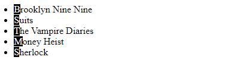
Let's see how well you've understood CSS selectors. Take a quiz to test your knowledge 💡
If your score isn't up to the mark, make sure to go through the concepts again and keep practising!